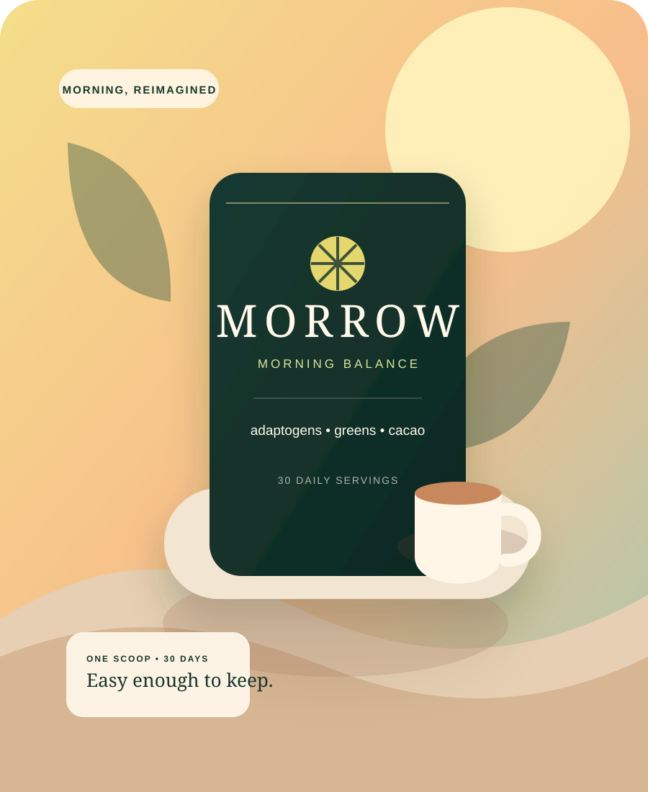
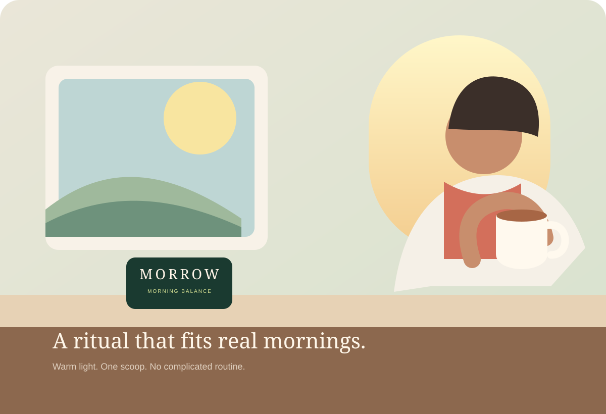
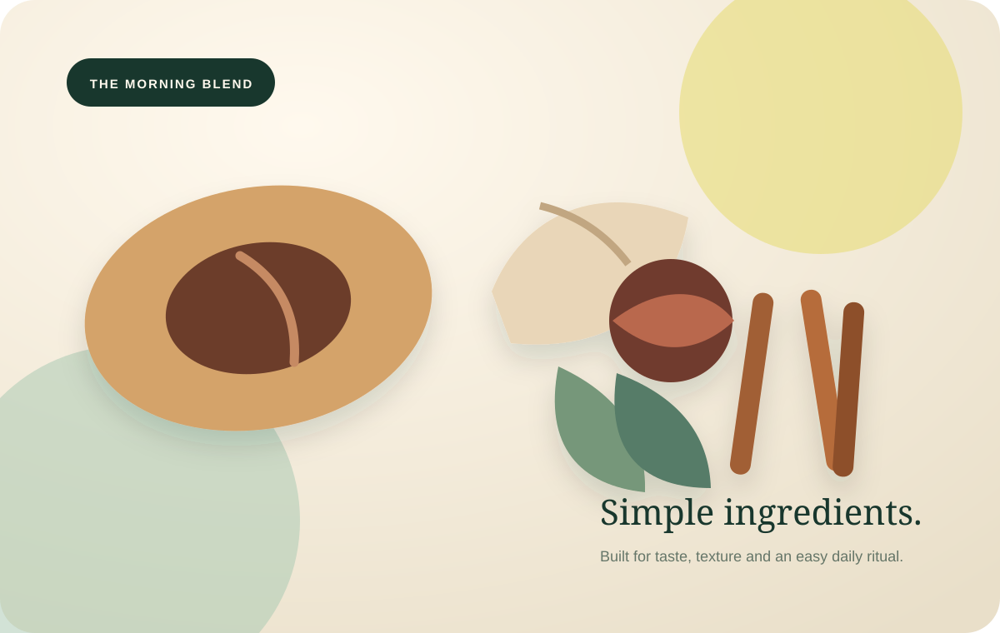

Make it taste good.
Because the easiest habit to keep is the one you look forward to.
YOUR MORNING, LESS COMPLICATED
MORROW Morning Balance is a smooth cacao-forward daily blend with adaptogens and greens, designed to make wellness feel like something you actually want to repeat.
Demo storefront. Product, pricing and reviews shown for design presentation.

THE MORNING EDIT
THE REAL PROBLEM
Most mornings are already full: alarms, messages, breakfast, getting out the door. The last thing anyone needs is a ten-step ritual sitting between them and their day.
MORROW starts with a simpler idea: make the habit enjoyable enough to keep.
Meet the blendBecause the easiest habit to keep is the one you look forward to.
No complicated prep, no elaborate routine, no twelve-bottle counter.
A product you actually want to leave out, scoop and use every morning.

A SMALLER ASK
Mix it warm, shake it cold, or add it to the drink you already make. The ritual flexes around your morning—not the other way around.
WHY IT FEELS DIFFERENT
A familiar, comforting profile instead of a medicinal-tasting powder.
A focused blend instead of a crowded kitchen-counter routine.
Hot, iced or blended—use it the way your morning already works.
Packaging, texture and color designed to make consistency feel satisfying.

WHAT’S INSIDE
Cacao gives MORROW its familiar, cozy backbone—the part that makes it feel more like a café ritual than a supplement.
WHAT HAPPENS NEXT?
Rather than promise an overnight transformation, MORROW is built around a more believable idea: consistency becomes easier when the routine fits your life.
Find your mix: warm water, milk, coffee or ice. Keep it uncomplicated.
Pair the scoop with something you already do—coffee, breakfast or your first glass of water.
The ritual starts feeling less like something to remember and more like part of the morning.
No perfection required. Just a small repeatable habit that makes the first hour feel more intentional.
BUILT FOR REAL LIFE
Mix it in a shaker and take it with you. No elaborate prep.
For slow mornings, hot days and coffee-shop energy at home.
Because visual cues make everyday habits easier to remember.
THE MORNING GROUP CHAT
“The biggest surprise was how normal it felt. It doesn’t scream ‘wellness powder’—it just became part of breakfast.”
THE GOOD STUFF, CLEARLY
Built around a one-scoop daily ritual.
Designed for warm or cold drinks.
A focused set of familiar ingredients.
Pause or cancel whenever you need.
CHOOSE YOUR MORNING
Pick the cadence that fits your routine. This demo uses sample pricing to show the purchase experience.
A LOW-PRESSURE FIRST MONTH
This concept guarantee keeps the purchase decision simple: try the product, find your favorite way to mix it, and decide whether it earns a place in your morning.
SAMPLE CUSTOMER STORIES
I expected another thing I’d forget after a week. The simple prep is what made it stick.
It feels more like making a morning drink than taking a supplement. That difference matters.
Quick, creamy, and easy to make while I’m packing lunch and checking email.
WHY MORROW EXISTS
MORROW is a fictional concept brand built to demonstrate what a modern DTC supplement page can feel like when long-form conversion strategy meets calmer, more editorial design.
The page intentionally borrows the pacing of high-performing wellness landers while keeping the brand, copy, artwork and composition original.
GOOD QUESTIONS
The concept is built around a warm cacao-forward flavor with cinnamon and a creamy finish, keeping the more functional ingredients in the background.
Add one scoop to warm water or milk and stir or froth. You can also shake it with cold milk and ice.
This demo uses a 30-serving pouch for the purchase experience.
In a production ecommerce build, the subscription would be configured so customers can pause, skip or cancel from their account.
No. MORROW Morning Balance is an original ecommerce design concept created to demonstrate a premium long-form wellness storefront.
MAKE TOMORROW MORROW